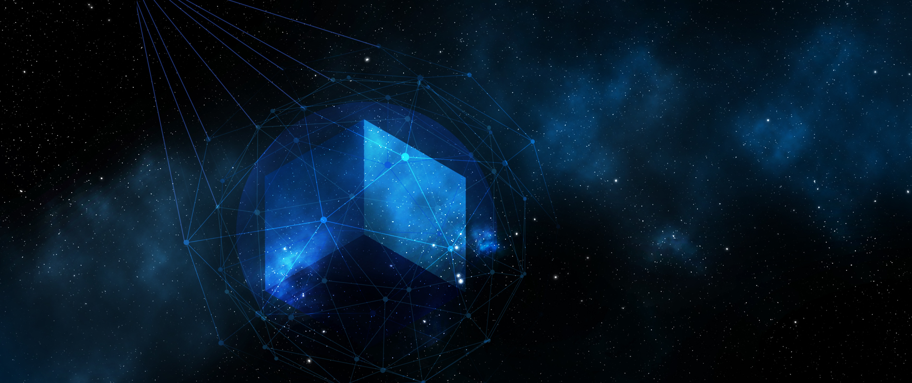

<ion-toolbar>
  <ion-buttons slot="start">
    <ion-menu-button size="small"
      autoHide="true"></ion-menu-button>
  </ion-buttons>
</ion-toolbar>

<ion-content scrollY="false"
  scrollX="false">
  <!--  -->
  <div class="content-wrapper">
    <div class="header no-border has-toolbar">
      <div class="title">
        {{'dashboard-component.title' | translate}}
      </div>
    </div>

    <app-tab-menu [tabs]="views"></app-tab-menu>
    <div class="content-scroll">
      <router-outlet></router-outlet>
    </div>
  </div>
</ion-content>

<ion-footer>
  
    <ion-tab-bar slot="bottom">
      <ion-tab-button tab="schedule" (click)="goto(routes.dashboard)">
        <ion-icon src="../../../../assets/icons/calendar.svg"></ion-icon>
        <ion-label>{{ 'page-title.dashboard' | translate }}</ion-label>
      </ion-tab-button>
      
      <ion-tab-button tab="news" (click)="goto(routes.feed)">
        <ion-icon src="../../../../assets/icons/rss.svg"></ion-icon>
        <ion-label>{{ 'page-title.news' | translate }}</ion-label>
      </ion-tab-button>

      <ion-tab-button tab="people" (click)="goto(routes.people)">
        <ion-icon src="../../../../assets/icons/users.svg"></ion-icon>
        <ion-label>{{ 'page-title.people' | translate }}</ion-label>
      </ion-tab-button>

      <ion-tab-button tab="about" (click)="goto(routes.messages)">
        <ion-icon src="../../../../assets/icons/message-square.svg"></ion-icon>
        <ion-label>{{ 'page-title.chat' | translate }}</ion-label>
      </ion-tab-button>

      <ion-tab-button tab="about" (click)="goto(routes.setting)">
        <ion-icon src="../../../../assets/icons/settings.svg" ></ion-icon>
        <ion-label>{{ 'page-title.setting' | translate }}</ion-label>
      </ion-tab-button>
    </ion-tab-bar>

</ion-footer>